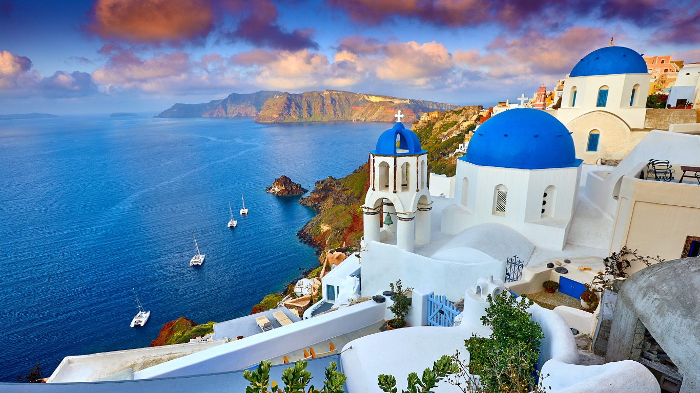

Grecia
Grecia este considerata leaganul civilizatei occidentale, o tara situata la rascrucea dintre Europa, Asia si Africa, influentele acesteia fiind vizibile asupra celor trei continente in lingvistica, arta, filosofie, muzica, literatura, politica si sport. Deoarece in acest spatiu s-a dezvoltat o civilizatie atat de bogata, siturile arheologice sunt foarte raspandite, oferind calatorii de mii de ani in istoria lumii.Este cunoscuta de asemenea pentru minunatul peisaj mediteranean, din insulele sale dar si de pe continent.Iata cateva dintre acestea:
1. Acropolele din Atena

Amplasat deasupra orasului Atena, pe un deal stancos, Acropole, sau, cum mai este cunoscuta, “Stanca Sacra, ” a Atenei, este unul dintre cele mai populare monumente culturale ale lumii. Aceasta veche fortareata reprezinta cel mai semnificativ punct de referinta al culturii antice grecesti, dar si simbolul orasului Atena, fiind apogeul dezvoltarii artistice grecesti, realizat in secolul al V-lea i.H.
Intinzandu-se pe o suprafata de aproape 3 ha, Acropole este situata la o altitudine de 156 de metri deasupra vaii Ilissos, si intruchipeaza expresia suprema a adaptarii arhitecturii pe un loc natural. A fost locuita inca din neoliticul timpuriu (mileniul al VI-lea i.H.), iar in mileniul al II-lea i.H. functiona ca si o cetate ce proteja lacasurile de cult si palatele regale, fiind inconjurata de un zid – Pelasgicon, construit inaintea invaziilor doriene ce amenintau Atena la inceputul anilor 1200 i.H.
In timpul perioadei clasice (450-330 i.H.), Acropole a capatat infatisarea sa definitiva, cand au fost construite trei temple importante chiar si in ziua de azi: in centru se afla Parthenon-ul sau Templul Fecioarei Atena, mai la nord de acesta se gasea templul Erechtheion, in timp ce la sud de intrarea in cadrul fortaretei, se inalta Templul lui Nike. Tot in aceasta perioada a fost realizata si celebra poarta Propylaea, ce permite intrarea in Acropole. In partea de sud a Acropolei se gasesc astazi ruinele teatrului in aer liber, teatru cunoscut ca si Teatrul lui Dionisos, , iar la doar cateva sute de metri se poate vedea Teatrul lui Herodes Atticus, un bogat aristocrat grec, acum partial reconstruit.
In timpul dominatiei Imperiului Bizantin, templele existente au fost transformate in biserici, cum a fost si cazul Parthenon-ului, cand a devenit o biserica dedicata Fecioarei Maria. In anul 1204, dupa caderea Imperiul Bizantin, Acropole a devenit centrul administrativ al orasului Atena, iar Parthenonul catedrala sa, tot aici fiind construit si un turn de dimensiuni mari – Turnul Francilor, care a fost demolat abia in secolul al XIX-lea. Cand turcii au preluat orasul in anul 1456, acesta a devenit o moschee, Parthenon-ul fiind utilizat ca si sediu al armatei turcesti, iar Erechtheion-ul functiona ca si harem al guvernatorului turc.
Dupa eliberarea Atenei de sub dominatia Imperiului Otoman, protejarea, conservarea si restaurarea monumentelor a fost una dintre principalele sarcini ale noului stat grec, primele sapaturi arheologice din zona Acropole avand loc intre anii 1835-1837. Toate artefactele antice de valoare sunt prezentate in cadrul Muzeului Acropole, amplasat pe panta sudica a dealului ce gazduieste intreg ansamblul de temple, la o distanta de 280 de metri de Templul Fecioarei Atena. La data de 27 martie 2007, Acropole se gasea pe lista celor mai importante monumente ale Patrimoniul Cultural European.
Pentru planuri de vacanță:


2.Santorini

Santorini este o insulă din Marea Egee, aparțind de arhipelagul Insulelor Ciclade, Grecia, cu o populație de 13.600 loc. și cu o suprafață de73 km². Capitala insulei este Thira.
In mijlocul insulei se afla un lac cu apa albastra, care s-a format pe locul unui vulcan foarte vechi care, conform legendei, a distrus continentul pierdut, Atlantis, atunci cand a erupt acum 3500 de ani, ingropand orasul antic Akrotiri (care acum este excavat) sub tone de cenusa.
Insula Santorini are doua orase, Fira si Ia, situate in zonele cele mai inalte ale insulei. Aici sunt construite hoteluri, restaurante, baruri si o multime de alte facilitati turistice care sa mentina turistii bine dispusi atunci cand se relaxeaza intre vizitele facute la ruinele arheologice ale vechiului Thera. Santorini are doua plaje accesibile, Perissa si Kamari, amandoua caracterizate prin nisipul vulcanic de culoare neagra.
Suprafata insulei este de 96 km patrati si se afla la 130 mile nautice de Piraeus. Linia de coasta abrupta a partii vestice este in opozitie cu plajele intinse din partea de est, unele nisipoase iar unele cu pietricele.
Daca porniti din Skala spre Fira trebuie sa urcati pe jos sau pe spatele unui magar. Exista si un funicular pentru cei ce vor sa evite sutele de trepte. Urcarea costa, cu funicularul sau cu magarusul, 3 euro/persoana. Veti intalni insa incapatanarea magarusului care poate refuza sa urce sau sa coboare cu dvs. in spate si nu veti putea recupera banii.
Pentru planuri de vacanță:
3.Navagio, Zakynthos


Este una dintre cele mai apreciate si, totodata, exclusiviste plaje din Grecia. Situata pe insula Zakynthos, cea de a treia ca marime dintre insulele ioniene, plaja Navagio (plaja epavei sau plaja contrabandistilor, cum i se mai spune) pare, mai degraba, o frantura de rai, izolata de restul civilizatiei, de care doar cei privilegiati au sansa sa se bucure. Plaja nu este accesibila decat cu vaporul, dar asta nu impiedica mii de turisti sa se aventureze in acest colt ascuns de lume pentru a se delecta macar cateva minute cu imaginea incredibila a stancilor uriase, a plajei cu nisip fin si a albastrului transparent al apei marii..
O alta atractie a plajei, pe langa imaginea de vis oferita de natura, este epava vasului scotian Panagiotis, esuat pe tarm in anul 1980. Nimeni nu stie exact cum a ajuns aceasta nava pe plaja, desi legendele nu au intarziat sa apara. Construita in Scotia in anul 1937, nava si-a schimbat numele de mai multe ori de-a lungul timpului, sfarsind prin a deveni Panagiotis, nava celebra a contrabandistilor de tigari si a mafiotilor italieni. Unele voci sustin ca nava a esuat in timpul unei urmariri cu navele pazei de coasta grecesti, ulterior echipajul disparand fara urma. O alta varianta a povestii sustine ca nava a fost scufundata in apropierea tarmului de aceeasi paza de coasta, valurile aruncand-o apoi pe tarm. Ultima, si poate cea mai putin romantioasa poveste, spune ca ministrul turismului grec din anii '80 a dat ordina ca epava sa fie dusa special pe aceasta plaja pentru a atrage cat mai multi turisti...
Indiferent insa de legendele tesute in jurul ei, plaja epavei este considerata si astazi o veritabila minune a naturii, poate cea mai frumoasa plaja din Grecia, pe insula pe care, odinioara, a cucerit-o si stapanit-o insusi eroul mitologic Ulise. Poate ca aici, pe un loc atat de frumos, si-a purtat pasii chiar cel mai intelept dintre eroii care au luptat in razboiul troian...
Pentru planuri de vacanță: